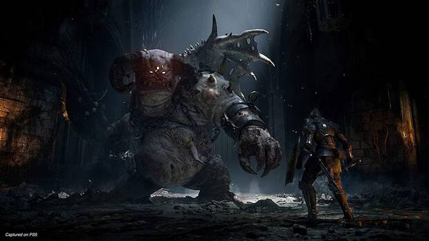
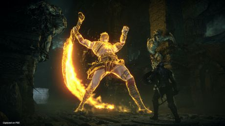

Demon's Souls
Sinopsis
"Demon's Souls" es un juego de rol de acción desarrollado por FromSoftware. Ambientado en un oscuro mundo de
fantasía, el juego sigue al protagonista en su búsqueda por liberar el reino de Boletaria de las fuerzas
demoníacas que lo asolan. Los jugadores se enfrentan a desafiantes enemigos y exploran un mundo atmosférico
mientras desentrañan una historia llena de misterio y peligro.


Resumen de la Jugabilidad
En "Demon's Souls", los jugadores asumen el papel de un valiente aventurero que debe enfrentar a enemigos
feroces y jefes temibles en su lucha por restaurar el equilibrio en el reino. La jugabilidad se caracteriza por
su alta dificultad y enfoque en la estrategia. Los jugadores deben dominar el combate preciso y táctico,
aprovechar las habilidades y armas disponibles, y aprender de cada encuentro para progresar.
El juego presenta un sistema de mundo interconectado en el que los jugadores exploran áreas interconectadas,
desbloquean atajos y descubren secretos. La progresión del personaje incluye la elección de clases y la
asignación de puntos de habilidad para adaptarse al estilo de juego preferido. La experiencia multijugador
también permite la cooperación y la invasión de otros jugadores, añadiendo un componente social y competitivo.